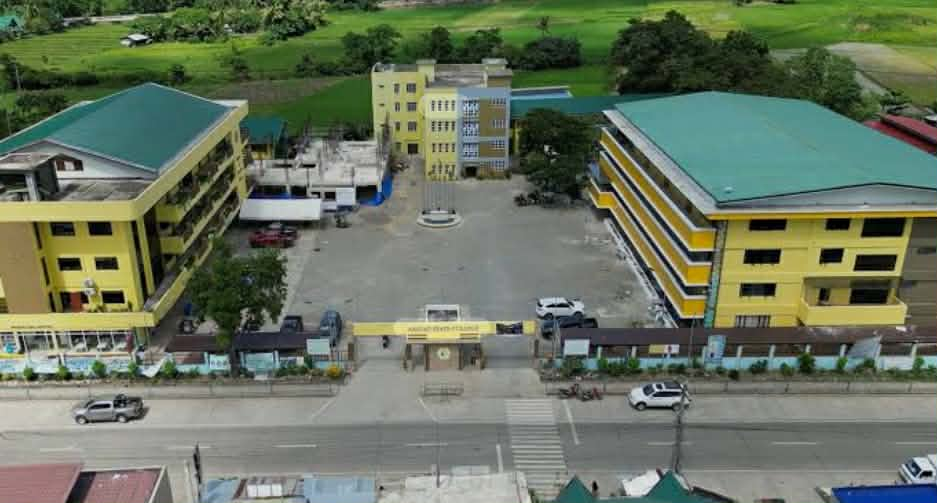

Mission:Apayao State College is committed to nurturing and developing nation builders in critical fields towards producing graduates equipped with internationally competitive innovations who can transform society for sustainable development.
Vision: As an institution for higher learning, is totally committed to satisfying excellent education for its stakeholders, empowering human resources, and generating innovation-driven technologies anchored on Sustainable Development Goals and client satisfaction.
Chorus:
On March here we are all ASC-ians
One heart, one soul, one mind
With joy we bravely all stride, ASC is our pride.
The future smiles on us, that’s why we study hard.
This is our school song for the truth, the just, the right.
Today we all stand, On ASC verdant land.
Its beautiful hills and valleys
Wonderful people, rivers, and trees.
Onward we all march, thru faith and hope alive
Bring forth happy people, undivided peaceful tribe
Forward we all strive, our visions great and bright
Nourish body and mind aspirations great divine.
Repeat Chorus:
This is our school song for the truth, the just, the right.